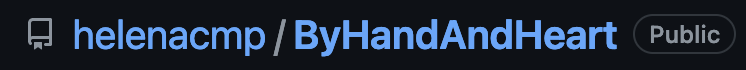

REDESIGN AF WEBSITE
By Hand And Heart - Helle Hegner
Til dette redesign besluttede vi, at vi gerne ville arbejde med noget kreativt. Vi fik dermed kontakt til keramikeren Helle Hegner. Helle har startet sin egen keramik shop, hvor hun sælger ud af keramikken. Dertil arrangere hun kurser i sit lille værksted i Birkerød. Vi fik aftalt et møde, hvor vi fik interviewet Helle. Dermed fik vi mere erfaring, inden for interview teknikker. Efterfølgende fik vi i fællesskab designet et nyt website til Helles webshop, som blev mere brugervenligt for Helles kunder.
GITHUB OG SCRUM-BOARD
Til selve arbejds og udviklingsprocessen, skulle vi anvende henholdsvis Github og Trello.com. Github skulle sættes op, for at vi efterfølgende kunne bruge det til kodningsprocessen. Dette gør, at flere ad gangen, kan arbejde i samme mappe i VS Code. Dertil også til at kunne hente ældre versioner af arbejdet ned. Optimalt til gruppeprojekter som dette. Trello derimod hjalp os, som gruppe med at holde styr på, hvor man var i projektet. Hvad man manglede og hvad man havde af udfordringer.
PROCESSEN
Gruppe nr 7
* Gruppekontrakt
* SCRUM-board
* Dokumentation
* Github, kodningsprocessen
* Resultat